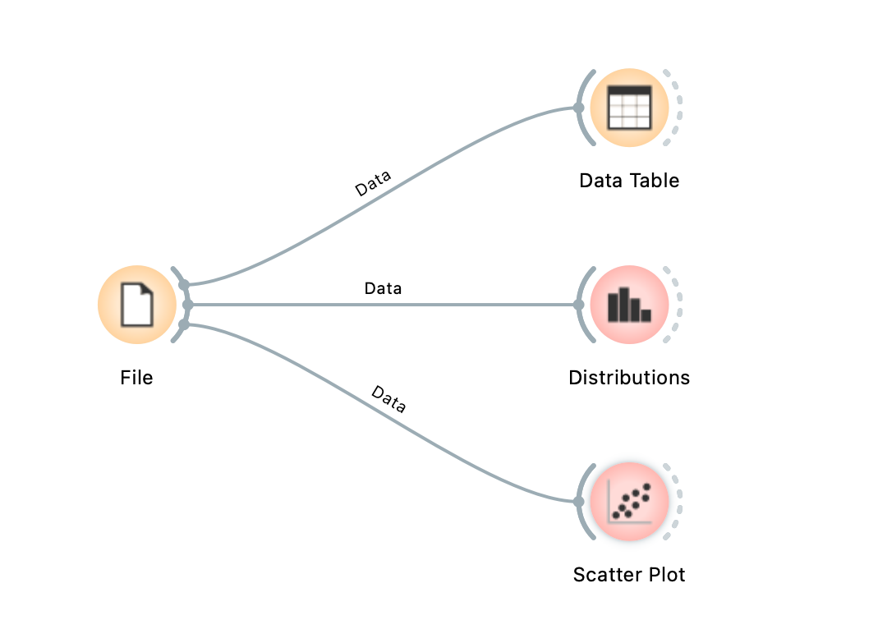

AI for Ed 2 · สัปดาห์ที่ 1
รู้จัก Machine Learning และ Orange
ความสามารถของ AI เกิดจากการเรียนรู้ข้อมูลตัวอย่าง
ม.5 · งานคู่ · ชุดข้อมูล: Zoo (สัตว์ 101 ชนิด) · โปรแกรม Orange Data Mining
ระบุข้อมูลผู้เรียน งานคู่ — 1 ใบงานต่อ 1 คู่
ใบงานบันทึกอัตโนมัติในเบราว์เซอร์ จึงควรใช้เครื่องเดิมตลอดคาบ · เมื่อจบคาบ กดปุ่ม บันทึกใบงานเป็น PDF (มุมขวาบน) แล้วส่งไฟล์ PDF พร้อมไฟล์ .ows
จากผู้ใช้ AI สู่ผู้สร้างโมเดล AI
ภาคเรียนที่ 1 — ผู้ใช้ AI
เขียน prompt สั่งงาน Gemini · สร้างภาพและวิดีโอ · NotebookLM
ชนิดข้อมูล · Filter · ทำความสะอาดข้อมูล · Dashboard ใน Power BI
ภาคเรียนที่ 2 — ผู้สร้างโมเดล
ป้อนข้อมูลให้คอมพิวเตอร์ เพื่อให้คอมพิวเตอร์ หากฎด้วยตนเอง
วัดความแม่นยำของโมเดล · วิเคราะห์ว่าโมเดลผิดพลาดที่ใด
สัปดาห์ 1 — วันนี้ ML คืออะไร · รู้จัก Orange
สัปดาห์ 2 สำรวจและทำความสะอาดข้อมูล
สัปดาห์ 3 Decision Tree — ต้นไม้ตัดสินใจ
สัปดาห์ 4 การวัดประสิทธิภาพของโมเดล
สัปดาห์ 5 Clustering — การจัดกลุ่มข้อมูล
สัปดาห์ 6 Regression — การทำนายค่าตัวเลข
สัปดาห์ 7 AI กับรูปภาพ + จริยธรรม
สัปดาห์ 8 โครงงานย่อยและการนำเสนอ
รูปแบบคาบเรียนในภาคเรียนนี้ (2 ชั่วโมง)
0–30 นาที
30–60 นาที
60–115 นาที
ส่งงาน
ข้อตกลงในชั้นเรียน
ทำงานเป็นคู่ และสลับผู้ควบคุมเครื่อง เมื่อผ่านครึ่งเวลาของช่วงปฏิบัติ
ใบงานสัปดาห์ละ 20 คะแนน · คะแนนส่วนใหญ่มาจากการอธิบายเหตุผล ไม่ใช่ความสวยงามของงาน
ส่งไฟล์ PDF ใบงาน และไฟล์ workflow .ows
การใช้ Gemini
ใช้ได้: แปลคำศัพท์ · สอบถามการทำงานของเมนูหรือปุ่ม
ไม่อนุญาต: ให้ Gemini ตอบคำถามในใบงานแทน — คำตอบต้องอ้างอิงผลที่ปรากฏใน Orange ของนักเรียนเอง
บรรยาย AI ที่เรียนรู้จากข้อมูลในชีวิตประจำวัน
▶️ YouTube / TikTok แนะนำคลิป
📧 กล่องสแปมในอีเมล
🙂 ปลดล็อกมือถือด้วยหน้า
⌨️ แป้นพิมพ์แนะนำคำถัดไป
🗺️ Google Maps แสดงสภาพการจราจร
🛒 Shopee "สินค้าที่คุณอาจชอบ"
คำถามชวนคิด: ระบบทั้งหมดนี้มีลักษณะร่วมกันอย่างไร (แนวคำตอบ: ไม่มีผู้ใดเขียนกฎให้ทีละข้อ ระบบเรียนรู้รูปแบบจากตัวอย่างจำนวนมาก ด้วยตนเอง)
โปรแกรมทั่วไป vs Machine Learning
โปรแกรมทั่วไป
กฎ (มนุษย์เขียน)
ข้อมูล
โปรแกรม
คำตอบ
ถ้ามีคำว่า "ถูกรางวัล"
→ จัดเป็นสแปม
Machine Learning
ข้อมูล
คำตอบ (เฉลย)
เรียนรู้ (ML)
กฎ = โมเดล
อีเมล 10,000 ฉบับ
ที่ระบุแล้วว่าเป็นสแปมหรือไม่
โมเดล (Model) = กฎที่คอมพิวเตอร์สร้างขึ้นจากตัวอย่าง · นำไปใช้ทำนายข้อมูลใหม่ที่ไม่เคยพบมาก่อน ได้
กิจกรรม: "ฟลิบ" คืออะไร? — หากฎจากตัวอย่างด้วยตนเอง
ตัวที่ 1
ฟลิบ ✓
ตัวที่ 2
ฟลิบ ✓
ตัวที่ 3
ไม่ใช่ ✗
ตัวที่ 4
ฟลิบ ✓
ตัวที่ 5
ไม่ใช่ ✗
ตัวที่ 6
ไม่ใช่ ✗
ข้อมูลใหม่
ก ?
ข ?
พิจารณาตัวอย่าง 6 ตัวพร้อมเฉลย → หากฎว่าสิ่งใดคือ "ฟลิบ" → ใช้กฎนั้นทำนายตัว ก และ ข
อภิปรายกับคู่ 1 นาที ก่อนดูเฉลยในสไลด์ถัดไป
เฉลย: ฟลิบ = ตัวที่มีจุด (สีและจำนวนตาไม่เกี่ยว)
ตัว ก → ฟลิบ · ตัว ข → ไม่ใช่
กิจกรรมนี้มีขั้นตอนเดียวกับการทำงานของ ML:
พิจารณาตัวอย่าง ที่มีเฉลย
สังเกตลักษณะ (สี · จำนวนตา · จุด)
หากฎ ที่อธิบายเฉลยได้ทุกตัว
ใช้กฎนั้นทำนายตัวใหม่
หากตัวอย่างมีความลำเอียง "สีฟ้า = ฟลิบ" และทำนายตัวที่ 3 ผิดAI ก็เช่นเดียวกัน: คุณภาพของสิ่งที่เรียนรู้ขึ้นอยู่กับตัวอย่างที่ได้รับ (จะศึกษาเพิ่มเติมในสัปดาห์ที่ 7)
คำศัพท์พื้นฐานของ ML: ตัวอย่าง · Feature · Target
name hairมีขน feathersมีขนนก eggsออกไข่ milkให้นม aquaticอยู่ในน้ำ finsมีครีบ legsจำนวนขา typeประเภท lion 1 0 0 1 0 0 4 mammal penguin 0 1 1 0 1 0 2 bird tuna 0 0 1 0 1 1 0 fish honeybee 1 0 1 0 0 0 6 insect
1 แถว = 1 ตัวอย่าง (instance)1 = ใช่ · 0 = ไม่ใช่
Feature = ลักษณะที่ใช้ในการทำนาย
Target = สิ่งที่ต้องการทำนาย
Meta = ข้อมูลประกอบ
เหตุใดจึงไม่ควรใช้ name เป็น Feature — หากโมเดลใช้ชื่อ จะเป็นการจดจำรายตัวแทนการเรียนรู้ลักษณะ และจะทำนายสัตว์ที่ไม่มีชื่ออยู่ในข้อมูลไม่ได้
ทบทวนจากภาคเรียนที่ 1: ชนิดข้อมูลใน Orange
ชื่อที่ใช้ในภาคเรียนที่ 1 ชื่อใน Orange ตัวอย่างในข้อมูล Zoo ข้อมูลหมวดหมู่ (Nominal) categorical type = mammal, bird, fish … · feathers = 0 / 1ข้อมูลหมวดหมู่มีลำดับ (Ordinal) categorical (ไม่มีใน Zoo) เช่น ระดับความพอใจ น้อย–กลาง–มาก ข้อมูลตัวเลข (Numerical) numeric ในไฟล์ Zoo ตั้ง legs เป็น categorical ไว้ (0, 2, 4, 5, 6, 8 ขา) ข้อความ text name = aardvark, antelope …
ใน Orange ทุกคอลัมน์มีคุณสมบัติ 2 ประการ:
Type (ชนิดข้อมูล — categorical / numeric / text) และ
Role (หน้าที่ — feature / target / meta / skip)
ซึ่งจะเห็นได้ในหน้าต่าง File
ML 2 ประเภทหลัก: มีเฉลย และไม่มีเฉลย
Supervised — มีเฉลย
?
ข้อมูลใหม่
ทุกจุดมีสี (= เฉลย) → เรียนรู้แล้วทำนายจุดใหม่
เช่น จำแนกประเภทสัตว์ · คัดกรองอีเมลสแปม
Unsupervised — ไม่มีเฉลย
จุดไม่มีสี → คอมพิวเตอร์จัดกลุ่มข้อมูลที่คล้ายกันเอง
เช่น แบ่งกลุ่มลูกค้า · จัดกลุ่มเพลงที่มีลักษณะคล้ายกัน
สัปดาห์ 3, 4, 6 = Supervised · สัปดาห์ 5 = Unsupervised · ข้อมูล Zoo ที่ใช้ในวันนี้มีเฉลย (type) จึงเป็นแบบ Supervised
Orange: สร้างโมเดลด้วยการเชื่อมต่อ widget โดยไม่ต้องเขียนโค้ด

ภาพหน้าจอจริงจาก Orange 3.40
File อ่านไฟล์ข้อมูล แล้วส่งต่อผ่านเส้นเชื่อมที่มีป้าย DataData Table แสดงข้อมูลในรูปตารางDistributions แสดงจำนวนข้อมูลของแต่ละค่าScatter Plot แสดงข้อมูลเป็นจุดบนกราฟ 2 แกน
Widget = เครื่องมือ 1 ชิ้น ทำหน้าที่ 1 อย่างสีส้ม = Data · สีชมพู = Visualize (กราฟ)
เส้นเชื่อม = ส่งข้อมูลจาก widget ทางซ้ายไปยัง widget ทางขวา
Workflow = ผังงานทั้งหมด · บันทึกเป็นไฟล์ .ows
ดาวน์โหลดฟรี: orangedatamining.com/download (ติดตั้งไว้แล้วในห้องปฏิบัติการคอมพิวเตอร์)
สาธิต ขั้นที่ 1 — เปิด Orange และโหลดข้อมูล Zoo
1 เปิดโปรแกรม Orange → ที่หน้าต่างต้อนรับ กด New เพื่อเปิดผังงานใหม่
2 แถบซ้ายหมวด Data → ลาก widget File มาวางบนพื้นที่ทำงาน (หรือคลิกขวาที่พื้นที่ว่าง แล้วพิมพ์ File)
3 ดับเบิลคลิก File → ที่ช่องเลือกไฟล์ด้านบน เลือก zoo.tab จากรายการหากไม่มีในรายการ ให้กดปุ่ม … แล้วเปิดไฟล์ Week1/data/zoo.tab ที่ครูจัดเตรียมไว้
4 อ่านกล่อง Info แล้วบันทึกจำนวนแถวและจำนวน feature ไว้สำหรับตอบข้อ 2.1
✅ ตรวจสอบผล: กล่อง Info แสดง 101 instances · 16 features (no missing values) · categorical class with 7 values · 1 meta attribute · ตาราง Columns แสดง name, hair, feathers … type
สาธิต ขั้นที่ 2 — ดู Type และ Role ในหน้าต่าง File5 ดูตาราง Columns ในหน้าต่าง File ซึ่งแต่ละแถวแสดง Name · Type · Role · Values
6 หา type → Role เป็น target · หา name → Role เป็น meta · ที่เหลือ 16 ตัวเป็น feature
(ไฟล์กำหนดไว้แล้ว ไม่ต้องแก้ไข ในคาบนี้)
คำศัพท์ Feature ในข้อมูล Zoo (1 = ใช่ · 0 = ไม่ใช่)
hair มีขน
feathers มีขนนก
eggs ออกไข่
milk ให้นมลูก
airborne บินได้
aquatic อาศัยในน้ำ
predator ล่าเหยื่อ
toothed มีฟัน
backbone มีกระดูกสันหลัง
breathes หายใจด้วยปอด
venomous มีพิษ
fins มีครีบ
legs จำนวนขา
tail มีหาง
domestic สัตว์เลี้ยง
catsize ขนาดใหญ่กว่าแมว
ค่าของ Target type (7 ประเภท)
mammal สัตว์เลี้ยงลูกด้วยนม
bird นก
fish ปลา
insect แมลง
reptile สัตว์เลื้อยคลาน
amphibian สัตว์สะเทินน้ำสะเทินบก
invertebrate สัตว์ไม่มีกระดูกสันหลังอื่น ๆ (ที่ไม่ใช่แมลง)
สาธิต ขั้นที่ 3 — Data Table: ดูข้อมูลทั้งตาราง7 ลากเส้นจากขอบขวาของ File ไปปล่อยในพื้นที่ว่าง → พิมพ์ Data Table → กด Enter
8 ดับเบิลคลิก Data Table → สังเกตว่าคอลัมน์ type (target) มีพื้นสีเทา และคอลัมน์ name (meta) มีพื้นสีครีม แยกจากคอลัมน์ feature
9 คลิกหัวคอลัมน์ airborne เพื่อเรียงข้อมูล (หากแถวที่มีค่า 1 ไม่อยู่ด้านบน ให้คลิกซ้ำอีกครั้ง) แล้วสังเกตว่าสัตว์ที่บินได้เป็นประเภทใดบ้าง
✅ ตรวจสอบผล: กล่อง Info แสดง 101 instances และ 16 features · แถวที่ airborne = 1 ส่วนใหญ่เป็น bird และ insect และมี mammal 2 ตัว คือ fruitbat และ vampire (ค้างคาว)
คำถามชวนคิด: dolphin (โลมา) ถูกระบุเป็นประเภทใด และเหตุใดจึงไม่ใช่ fish
สาธิต ขั้นที่ 4 — Distributions: การกระจายของข้อมูล10 เชื่อม File กับ Distributions (ลากเส้นใหม่จาก File)
11 ในกล่อง Variable ด้านซ้าย เลือก type → กราฟแสดงจำนวนสัตว์แต่ละประเภท (ใช้ตอบข้อ 2.2)
12 เปลี่ยนเป็น feathers → ในกล่อง Columns ช่อง Split by เลือก type → แท่งกราฟแบ่งสีตามประเภท
✅ ผลที่ควรได้: แท่ง feathers = 1 มีสีเดียว คือ bird ทั้งหมด · แท่ง feathers = 0 มีทุกสียกเว้น bird
การตีความ: คำถามเพียงข้อเดียว "มีขนนกหรือไม่" แยกนกออกจากสัตว์อื่นได้ครบทุกตัว feature นี้จึงเหมาะมากสำหรับการจำแนกนก
สาธิต ขั้นที่ 5 — Scatter Plot: พิจารณา 2 feature พร้อมกัน13 เชื่อม File กับ Scatter Plot
14 ในกล่อง Axes ตั้ง Axis x = milk · Axis y = feathers · ในกล่อง Attributes ตั้ง Color = type
15 จุดที่มีค่าเดียวกันจะซ้อนทับกัน ให้เลื่อนแถบ Jittering (ใต้กล่อง Attributes) ไปทางขวาเพื่อกระจายจุด
✅ ผลที่ควรได้: ข้อมูลแบ่งเป็น 3 กลุ่ม — milk = 1 เป็น mammal ทั้งหมด · feathers = 1 เป็น bird ทั้งหมด · ตำแหน่ง (0, 0) มีสัตว์หลายประเภทปนกัน
คำถาม 2 ข้อแยกสัตว์ได้ 2 ประเภท Decision Tree ที่ Orange จะสร้างให้ในสัปดาห์ที่ 3
สาธิต ขั้นที่ 6 — บันทึก Workflow16 เมนู File → Save As… → ตั้งชื่อ week1_เลขที่1_เลขที่2.ows เช่น week1_15_16.ows
17 บันทึกไว้ในโฟลเดอร์ที่ครูกำหนด · บันทึกด้วย Ctrl+S (Mac: ⌘+S) เป็นระยะ ระหว่างทำใบงาน
ไฟล์ .ows เก็บเฉพาะผังงาน (widget เส้นเชื่อม และการตั้งค่า) ไม่ได้เก็บข้อมูล · หากเลือก zoo.tab จากรายการไฟล์ของ Orange จะเปิดผังงานบนเครื่องอื่นที่ติดตั้ง Orange ได้ทันที · หากเปิดจากไฟล์ที่ครูจัดเตรียมไว้ ต้องนำไฟล์ zoo.tab ไปด้วยเมื่อย้ายเครื่อง
ผังงานเมื่อจบช่วงสาธิต: File 1 widget เชื่อมไปยัง Data Table · Distributions · Scatter Plot
ตรวจสอบให้ตรงกับภาพด้านขวาก่อนเริ่มทำใบงาน
ปฏิบัติ ใบงานวันนี้: 4 กิจกรรม · 20 คะแนน · 55 นาที
กิจกรรม คะแนน เวลาแนะนำ เครื่องมือ 1 Feature หรือ Target?5 10 นาที การวิเคราะห์ (ไม่ต้องใช้ Orange) 2 สำรวจข้อมูล Zoo8 20 นาที Data Table · Distributions · Scatter Plot 3 ทำนายประเภทสัตว์ชนิดใหม่5 15 นาที ใช้กราฟใน Orange เป็นหลักฐาน 4 ออกแบบชุดคำถามจำแนกสัตว์2 10 นาที สรุปจากกิจกรรม 2–3
⏱ นาทีที่ 85 ของคาบ สลับผู้ควบคุมเครื่อง · คำตอบที่จะได้คะแนนเต็มต้องอ้างอิงตัวเลขหรือกราฟจาก Orange
กิจกรรมที่ 1 — Feature หรือ Target? (5 คะแนน)
สำหรับแต่ละสถานการณ์ ให้ระบุ Feature อย่างน้อย 2 รายการ และ Target (หากไม่มี ให้ระบุว่า "ไม่มี") แล้วเลือกประเภทของ ML
สถานการณ์ Feature / Target ประเภท 1.1 แอปพลิเคชันอีเมลทำนายว่าอีเมลฉบับใหม่เป็นสแปมหรือไม่ โดยเรียนรู้จากอีเมลเก่าที่ผู้ใช้รายงานว่าเป็นสแปม
— เลือก — Supervised Unsupervised 1.2 ผู้ค้าผลไม้ต้องการทำนายว่าทุเรียนสุกพร้อมรับประทานหรือไม่ จากบันทึกของทุเรียนที่ผ่าแล้วในอดีต
— เลือก — Supervised Unsupervised 1.3 แอปพลิเคชันฟังเพลงจัดเพลงที่มีลักษณะคล้ายกันไว้เป็นกลุ่ม โดยไม่มีข้อมูลว่าเพลงใดเป็นแนวใด
— เลือก — Supervised Unsupervised 1.4 โรงเรียนต้องการทำนายคะแนนสอบปลายภาคของนักเรียน จากข้อมูลของรุ่นพี่ที่ทราบคะแนนจริงแล้ว
— เลือก — Supervised Unsupervised 1.5 ครูต้องการแบ่งนักเรียนเป็นกลุ่มติวตามพฤติกรรมการเรียน โดยยังไม่ทราบว่าควรมีกี่กลุ่มและแต่ละกลุ่มมีลักษณะอย่างไร
— เลือก — Supervised Unsupervised
กิจกรรมที่ 2 — สำรวจข้อมูล Zoo (ตอนที่ 1) (ตอนที่ 1–2 รวม 8 คะแนน)
2.1 ข้อมูล Zoo มีสัตว์กี่ตัว มี Feature กี่ตัว และ Target คือคอลัมน์ใด (ดูจากกล่อง Info) — 1 คะแนน
2.2 ใช้ Distributions เลือก type — ประเภทใดมีจำนวนมากที่สุด และน้อยที่สุด อย่างละกี่ตัว — 1 คะแนน
2.3 ระบุ Feature 1 ตัว ที่แยก mammal ออกจากสัตว์ประเภทอื่นได้ครบถ้วนโดยไม่มีข้อยกเว้น — ระบุชื่อ Feature และอธิบายสิ่งที่กราฟ Distributions (Split by = type) แสดงเป็นหลักฐาน — 2 คะแนน
ข้อสังเกต: ควรตรวจสอบ hair อย่างละเอียด เนื่องจากมี mammal บางตัวที่ไม่มีขน และมีสัตว์ประเภทอื่นที่มีขน
กิจกรรมที่ 2 — สำรวจข้อมูล Zoo (ตอนที่ 2)
2.4 ปลาทุกตัวมีครีบ แต่สัตว์ที่มีครีบไม่จำเป็นต้องเป็นปลา — เรียงคอลัมน์ fins ใน Data Table แล้วระบุชื่อสัตว์ที่มีครีบแต่ไม่ใช่ fish พร้อมประเภทของสัตว์เหล่านั้น — 1 คะแนน
2.5 ใน Scatter Plot ทดลองเปลี่ยน feature บนแกน x และ y จนได้คู่ที่ทำให้ fish แยกเป็นกลุ่มเดียวโดยไม่ปนกับสัตว์ประเภทอื่น — ระบุคู่ feature ดังกล่าว — 1 คะแนน
กิจกรรมที่ 3 — ทำนายประเภทสัตว์ชนิดใหม่ (5 คะแนน)
สัตว์ 3 ชนิดนี้ไม่มีในข้อมูล Zoo จึงเป็น "ข้อมูลใหม่" ให้ใช้กราฟใน Orange เป็นหลักฐานในการทำนายประเภท (คำตอบต้องระบุ feature และกราฟที่ใช้ ไม่ใช่อาศัยความรู้เดิมเพียงอย่างเดียว)
สัตว์ hair feathers eggs milk aquatic backbone fins legs tail ก. พะยูน (dugong) 0 0 0 1 1 1 1 0 1 ข. แมงมุม (spider) 0 0 1 0 0 0 0 8 0 ค. ตุ๊กแก (gecko) 0 0 1 0 0 1 0 4 1
3.1 พะยูนเป็นประเภทใด และใช้หลักฐานใด (Feature + กราฟ) — 1
3.2 แมงมุมเป็นประเภทใด และใช้หลักฐานใด — 1
3.3 ตุ๊กแกเป็นประเภทใด และใช้หลักฐานใด (ข้อนี้ต้องใช้ Feature มากกว่า 1 ตัว) — 2
3.4 คำทำนายของสัตว์ชนิดใดที่นักเรียนมั่นใจน้อยที่สุด เพราะเหตุใด — 1
กิจกรรมที่ 4 — ออกแบบชุดคำถามจำแนกสัตว์ (2 คะแนน)
4.1 ออกแบบคำถามแบบ "ใช่ / ไม่ใช่" ไม่เกิน 5 ข้อ เรียงตามลำดับ เพื่อจำแนกสัตว์ให้ได้มากประเภทที่สุด (ใช้เฉพาะ Feature ในข้อมูล Zoo)
ชุดคำถามนี้คือ Decision Tree ที่สร้างด้วยมือ ในสัปดาห์ที่ 3 จะนำไปเปรียบเทียบกับ Decision Tree ที่ Orange สร้าง (โปรดเก็บคำตอบนี้ไว้)
สรุปบทเรียน
สาระสำคัญ
ML คือการให้คอมพิวเตอร์เรียนรู้กฎจากตัวอย่าง แทนการให้มนุษย์เขียนกฎ
Feature = ลักษณะที่ใช้ทำนาย · Target = สิ่งที่ต้องการทำนายSupervised มีเฉลย · Unsupervised ไม่มีเฉลยOrange: File → Data Table · Distributions · Scatter Plot
หลักคิดสำหรับภาคเรียนนี้
AI ไม่ได้มีความสามารถวิเศษ แต่ค้นหารูปแบบจากข้อมูล
ตัวอย่างลำเอียง → กฎลำเอียง (กิจกรรมฟลิบ)
ข้อมูลมีข้อยกเว้นเสมอ (โลมามีครีบ · ตุ่นปากเป็ดออกไข่)
สัปดาห์หน้า — สำรวจและทำความสะอาดข้อมูล
ข้อมูลจริงมักไม่เป็นระเบียบเท่าข้อมูล Zoo
ข้อสังเกต: ในข้อมูล Zoo มีชื่อสัตว์ชนิดหนึ่งปรากฏ 2 ครั้ง ให้ลองค้นหาใน Data Table
ตรวจความครบถ้วน แล้วบันทึกเป็น PDF
ความคืบหน้าใบงาน 0 / 0 ช่อง
ระบบจะตรวจสอบความครบถ้วนของใบงานโดยอัตโนมัติ
ส่ง 2 ไฟล์ต่อ 1 คู่: PDF ใบงาน + ไฟล์ workflow .ows
⬇ บันทึกใบงานเป็น PDF